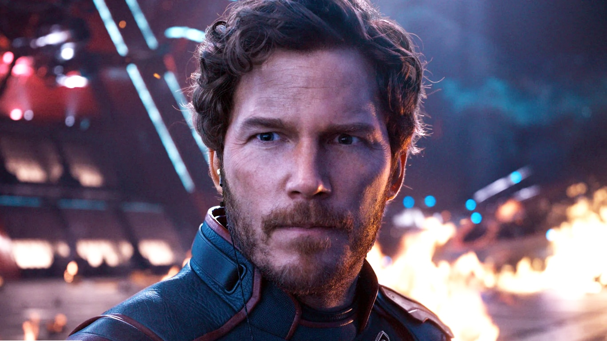

Resume de filme:
Guardiões da galáxia
Quill
é um menino tranquilo que se encontra em uma missão para proteger a galáxia.

Diretor:
James Gunn
Ano de lançamento: 2014
Gênero: Ação, Aventura, Ficção Científica
Duração: 2h 1min
Elenco principal:
Chris Pratt
,
Zeo Saldana
,
Dave Bautista